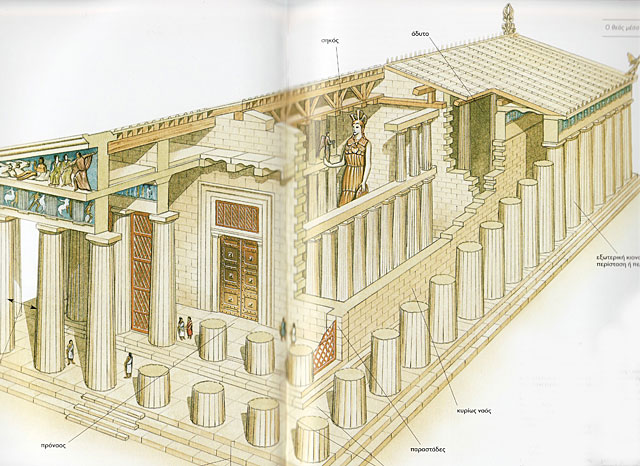
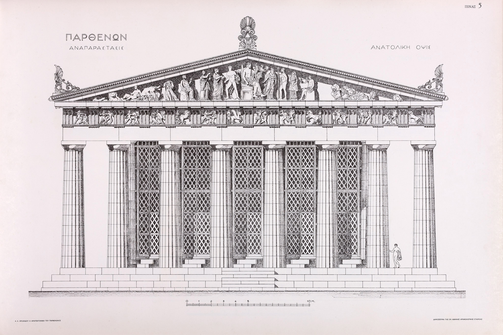

Κεφάλαιο 4: Η ζωή στην αρχαία Ακρόπολη
Η αρχαία Ακρόπολη δεν ήταν μόνο ένας θρησκευτικός και πολιτιστικός τόπος αλλά και ένα κέντρο ζωής για τους Αθηναίους. Εκτός από τις τελετουργίες και τις θρησκευτικές εκδηλώσεις, η Ακρόπολη λειτουργούσε ως κοινωνικό κέντρο, όπου οι πολίτες συναντιόντουσαν για συζητήσεις, πολιτικές αποφάσεις και διασκέδαση.
4.1: Η καθημερινή ζωή των Αθηναίων στην Ακρόπολη
Οι Αθηναίοι πολίτες επισκέπτονταν την Ακρόπολη καθημερινά για να συμμετάσχουν σε δημόσιες συνελεύσεις, να προσεύχονται στους θεούς, να παρακολουθούν θεατρικές παραστάσεις και να συναντούν τους φίλους τους στις αγορές και τις πλατείες.
Κεφάλαιο 5: Η τέχνη και η πολιτιστική σημασία της Ακρόπολης
Η Ακρόπολη αποτελεί έναν καταλύτη για την τέχνη και την πολιτιστική πρόοδο στην αρχαία Ελλάδα. Οι αρχιτέκτονες, οι γλύπτες και οι ζωγράφοι που εργάστηκαν στην Ακρόπολη συνέβαλαν στη δημιουργία μιας από τις πιο λαμπρές πολιτιστικές περιόδους στην ιστορία της ανθρωπότητας.
5.1: Η τέχνη στην Ακρόπολη
Οι ναοί και τα άλλα κτίρια στην Ακρόπολη διακοσμήθηκαν με εκλεπτυσμένα γλυπτά και ζωγραφικές σκηνές που απεικονίζουν μύθους και ιστορικά γεγονότα. Οι τέχνες αυτές είναι σημαντικές για την κατανόηση της αρχαίας ελληνικής θρησκείας, πολιτικής και κοινωνίας.
5.2: Η ανάκτηση και η σύγχρονη εκτίμηση των αρχαίων τέχνης
Η ανακάλυψη και η ανακατασκευή αρχαιολογικών ευρημάτων από την Ακρόπολη έχουν βοηθήσει στην αναγνώριση και την εκτίμηση της αρχαίας ελληνικής τέχνης σε διεθνές επίπεδο.
Κεφάλαιο 6: Η αρχαία Ακρόπολη στη λογοτεχνία και την τέχνη του 21ου αιώνα
Η Ακρόπολη συνεχίζει να εμπνέει καλλιτέχνες και συγγραφείς σε όλο τον κόσμο. Η παρουσία της στη σύγχρονη λογοτεχνία, τη ζωγραφική και τη φωτογραφία αναδεικνύει τη μακροχρόνια και συνεχή επιρροή της στον πολιτισμό.
6.1: Η Ακρόπολη στη σύγχρονη λογοτεχνία
Πολλοί σύγχρονοι συγγραφείς έχουν ενσωματώσει την Ακρόπολη στα έργα τους ως σύμβολο της ανθεκτικότητας, της ομορφιάς και της ιστορίας.
6.2: Η Ακρόπολη στη σύγχρονη τέχνη
Καλλιτέχνες από όλο τον κόσμο έχουν απεικονίσει την Ακρόπολη στις ζωγραφικές τους, ενισχύοντας την καλλιτεχνική της αξία και την συναισθηματική σημασία για το κοινό.
Κεφάλαιο 7: Η αρχιτεκτονική του Παρθενώνα
Ο Παρθενώνας υπήρξε το αποτέλεσμα της συνεργασίας σημαντικών αρχιτέκτων και γλυπτών στα μέσα του 5ου π.Χ.
7.1: Ιστορία
Το 446 π.Χ. αρχίζει σύμφωνα με τις πηγές η λατόμευση μαρμάρου για τον Παρθενώνα, αυτόν που θα ολοκληρωθεί τελικά στα πλαίσια του οικοδομικού προγράμματος του Περικλή για την Αθήνα.Οι αρχιτέκτονες του Παρθενώνα ήταν ο Ικτίνος και ο Καλλικράτης, ενώ τη γενική επιστασία του έργου και την ευθύνη για την κατασκευή των γλυπτών είχε ο γλύπτης Φειδίας. Στον ανατολικό χώρο, εμπρός από διώροφη δωρική κιονοστοιχία σχήματος Π, στεκόταν το χρυσελεφάντινο λατρευτικό άγαλμα της Αθηνάς, έργο του Φειδία.

7.2: Χαρακτηριστικά
Κύριο χαρακτηριστικό του Παρθενώνα είναι η έλλειψη ευθειών.Ο στυλοβάτης δεν είναι μια απολύτως οριζόντια επιφάνεια, αλλά παρουσιάζει καμπύλωση.Στον Παρθενώνα χρησιμοποιήθηκε πεντελικό μάρμαρο, εκτός από το στυλοβάτη, ο οποίος κατασκευάστηκε από ασβεστόλιθο. Το πτερό είχε 8 κίονες κατά πλάτος και 17 κατά μήκος.Σε κάτοψη ο κυρίως ναός χωριζόταν σε τρία τμήματα: τον πρόναο, τον σηκό και τον οπισθόναο. Ο σηκός χωριζόταν με εγκάρσιο τοίχο σε δύο άνισους χώρους, έναν μεγαλύτερο στα ανατολικά κι έναν μικρότερο στα δυτικά, τον οπισθόδομο.
